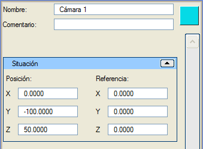

| |
|
Kamera Oluşturma
|
|
Genel Bilgiler Bu menüde kameralar oluşturulur. Bir kamera oluşturmak için konumu ve baktığı nokta belirtilir. Ayrıca, 3B grafik ortamında temsil edilmeleri için renkleri de belirtilebilir.  Seçenekler İsim: kamerayı bir isimle tanımlamayı sağlar. Yorum: bu kameraya açıklayıcı bir yorum eklemeyi sağlar. Renk: Renk butonu (bu örnekte cyan) aracılığıyla kamera için bir renk belirtilebilir. Varsayılan renk rastgeledir. Konum (X, Y, Z): kameranın tam konumunu belirtir. Eğer 3B grafik ortamında oluşturulursa, ilk tıklamaya karşılık gelen değerlerle doldurulur, ancak yapılandırma menüsündeki "Kamera yüksekliği"ne karşılık gelen yükseklik eklenir. Böylece kameralar zemine yapışık olarak oluşturulmaz ve görüş imkanı sağlanır. Referans Noktası (X, Y, Z): kameranın baktığı noktayı belirtir. |